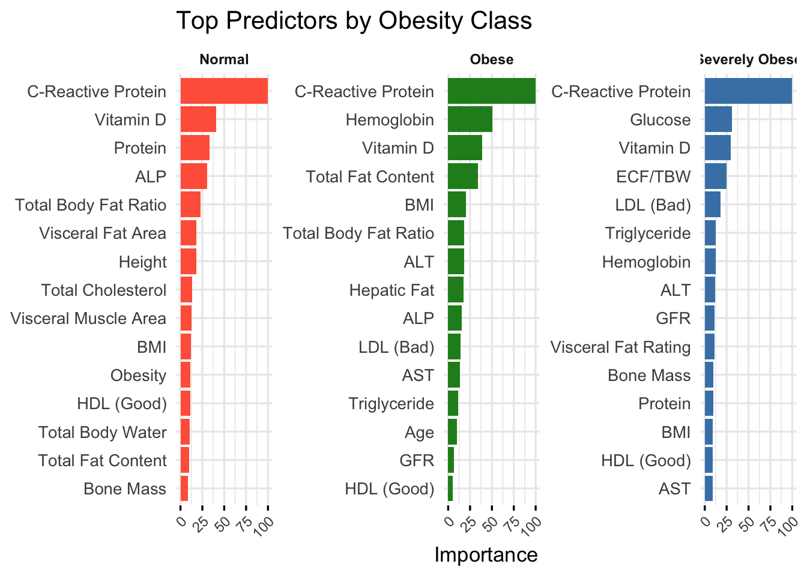

Uncovering Predictors of Gallstone Disease Across Age, Sex, and Obesity Subgroups
Author
Anna Calderon
Published
October 15, 2025
Subgroup Analysis Overview
Rather than building a single predictive model, this analysis focuses on subgroup-level exploration to identify how important predictors of gallstone disease may differ based on individual characteristics.
Objectives:
Understand which predictors are most important within each subgroup using Gradient Boosted Machines (GBM).
Assess whether predictors are positively or negatively associated with gallstone status using logistic regression coefficients.
Visualize the top 8–15 variables per group to highlight contrasts between groups.
Why Subgroups?
Exploring model results by subgroups allows us to: - Identify predictors that may be more relevant in specific populations (e.g., hepatic fat in older adults vs cholesterol in younger women). - Support personalized health recommendations by uncovering distinct risk profiles.
This approach aligns with precision medicine, which emphasizes tailoring diagnostics and interventions based on characteristics like age, sex, and body composition.
Sex-Specific Predictors
To examine whether predictive factors differ by sex, separate gradient boosting models were trained for males and females. As shown in the visualization below, C-Reactive Protein (CRP) emerged as the top predictor for both sexes, but its relative importance was much higher in females (100%) compared to males (also 100%, but with a smaller drop-off across other variables). Other predictors like Vitamin D, Extracellular Water, and Hemoglobin also showed distinct patterns between groups.
Key Insight:
CRP, Vitamin D, and protein-related metrics appear to be more influential in women, suggesting potential physiological or hormonal differences in gallstone susceptibility.
Next, we stratified the dataset by obesity class—defined using body fat percentage—as Normal, Obese, and Severely Obese. Separate models for each group reveal that CRP remains a consistently strong predictor, but the relative importance of other features such as Triglycerides, ECF/TBW, and Hemoglobin varies across categories.
Key Insight:
In severely obese individuals, inflammatory markers and metabolic factors gain more importance, possibly reflecting the compounding effects of systemic inflammation.
Code
# --- Generate Obisity Plot -------------------------------# Optional: set custom colors for claritygroup_colors <-c("Normal"="tomato", "Obese"="forestgreen", "Severely Obese"="steelblue")# Filter and reorder each group individuallyg1 <- top_obesity %>%filter(Group =="Normal") %>%arrange(Overall) %>%mutate(Variable =factor(Variable, levels = Variable))g2 <- top_obesity %>%filter(Group =="Obese") %>%arrange(Overall) %>%mutate(Variable =factor(Variable, levels = Variable))g3 <- top_obesity %>%filter(Group =="Severely Obese") %>%arrange(Overall) %>%mutate(Variable =factor(Variable, levels = Variable))ggplot() +geom_col(data = g1, aes(x = Variable, y = Overall, fill = Group), show.legend =FALSE) +geom_col(data = g2, aes(x = Variable, y = Overall, fill = Group), show.legend =FALSE) +geom_col(data = g3, aes(x = Variable, y = Overall, fill = Group), show.legend =FALSE) +facet_wrap(~ Group, scales ="free", nrow =1) +coord_flip() +scale_fill_manual(values = group_colors) +labs(x =NULL, y ="Importance", title ="Top Predictors by Obesity Class") +theme_minimal(base_size =13) +theme(strip.text =element_text(size =9, face ="bold"),axis.text.x =element_text(size =9, angle =45, hjust =1),axis.ticks.x =element_line(),panel.grid.major.x =element_line() )

Stratify by Age Class
Finally, models were trained across age categories: <40, 40–59, and 60+ years. Again, CRP consistently tops the list across all age brackets, but we see shifting roles in variables like Creatinine, Triglycerides, ALT, and Vitamin D.
Key Insight:
While CRP remains central, aging appears to increase the role of kidney function and lipid metabolism markers in predicting gallstones, especially in the 60+ age group.
Code
# --- 6. Generate Age Plot -------------------------------# Optional: set custom colors for claritygroup_colors <-c("<40"="tomato", "40–59"="forestgreen", "60+"="steelblue")# age < 40 ~ "<40",# age >= 40 & age < 60 ~ "40–59",# age >= 60 ~ "60+"# Filter and reorder each group individuallyg1 <- top_age %>%filter(Group =="<40") %>%arrange(Overall) %>%mutate(Variable =factor(Variable, levels = Variable))g2 <- top_age %>%filter(Group =="40–59") %>%arrange(Overall) %>%mutate(Variable =factor(Variable, levels = Variable))g3 <- top_age %>%filter(Group =="60+") %>%arrange(Overall) %>%mutate(Variable =factor(Variable, levels = Variable))ggplot() +geom_col(data = g1, aes(x = Variable, y = Overall, fill = Group), show.legend =FALSE) +geom_col(data = g2, aes(x = Variable, y = Overall, fill = Group), show.legend =FALSE) +geom_col(data = g3, aes(x = Variable, y = Overall, fill = Group), show.legend =FALSE) +facet_wrap(~ Group, scales ="free", nrow =1) +coord_flip() +scale_fill_manual(values = group_colors) +labs(x =NULL, y ="Importance", title ="Top Predictors by Age Class") +theme_minimal(base_size =13) +theme(strip.text =element_text(size =9, face ="bold"),axis.text.x =element_text(size =9, angle =45, hjust =1),axis.ticks.x =element_line(),panel.grid.major.x =element_line() )
Summary of the Dataset and Original Study
This analysis is based on data from the UCI Gallbladder Disease Dataset, originally published by Kocaay et al. (2020) in their clinical study on predicting gallstone disease using bioelectrical impedance and clinical markers.
Study Title:“Can Bioelectrical Impedance Analysis Be a New and Reliable Method for the Diagnosis of Gallstone Disease?”
The dataset contains information on 540 patients, including: - Demographic features: age, sex
- Body composition: BMI, visceral fat, hepatic fat, lean mass
- Biochemical markers: cholesterol, glucose, ALT, AST, etc.
- Target variable: gallstone status (present vs absent)
The goal of the original study was to assess whether body composition metrics could improve the diagnosis of gallstone disease.